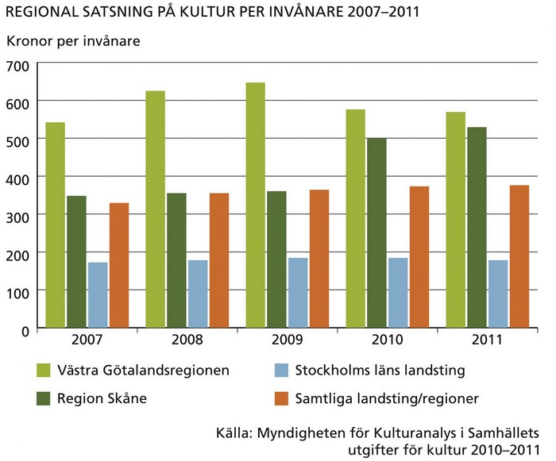
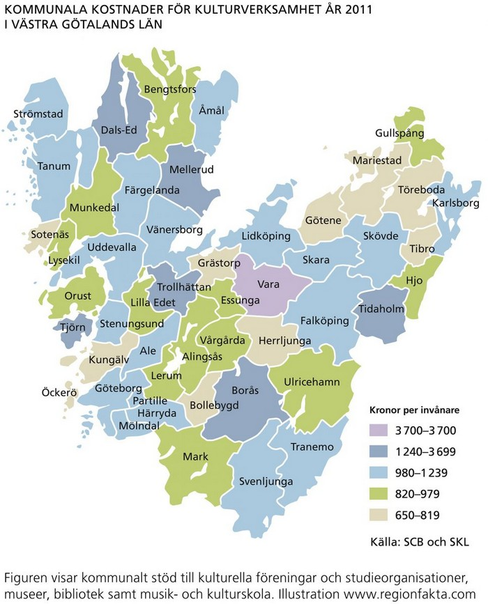
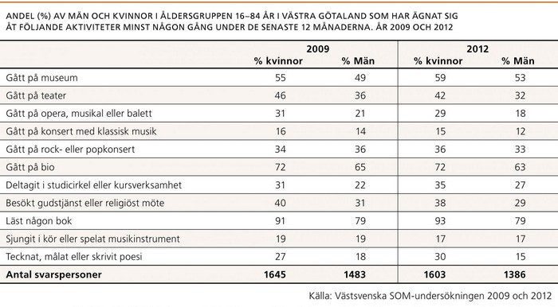
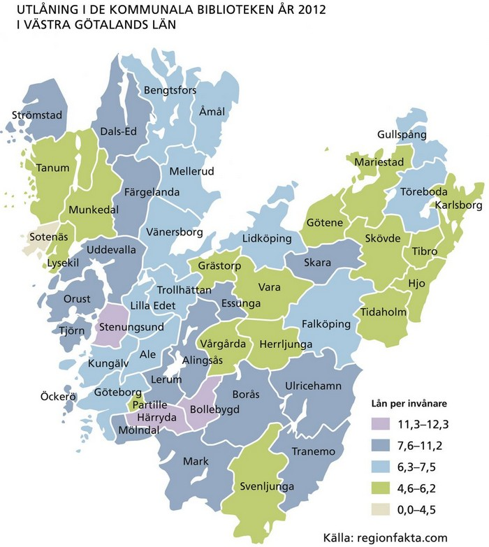
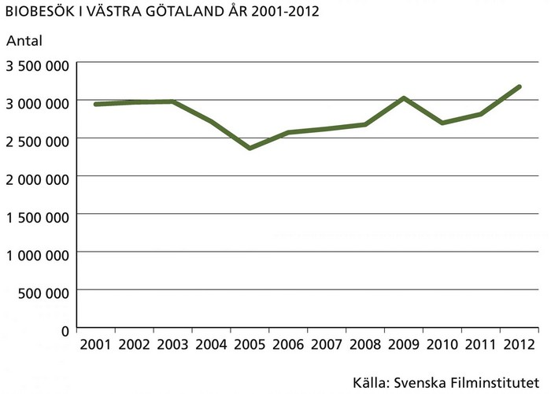
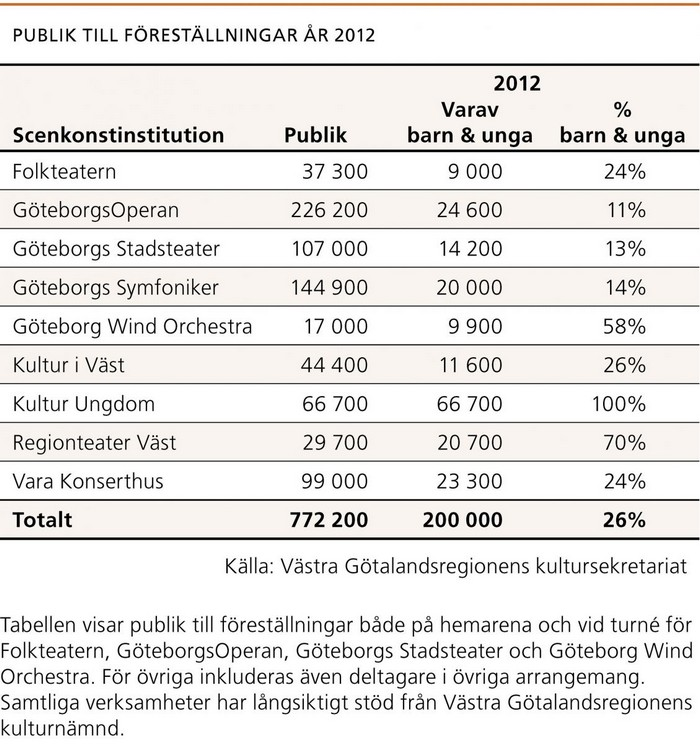
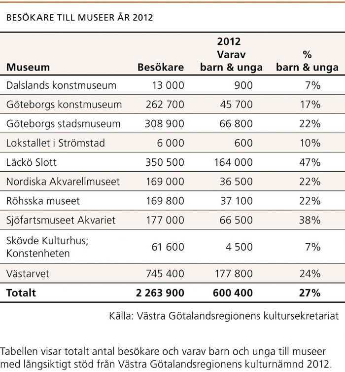

Västra Götalandsregionen ligger högst i landet när det gäller regionala kultursatsningar, både i förhållande till befolkningen och i kronor och ören. En jämförelse mellan de tre största regionerna i landet och riket i genomsnitt, visar att Västra Götaland har en ledande ställning.
2011 satsade kommunerna i Västra Götaland i genomsnitt 2,1 procent av de totala verksamhetskostnaderna på kultur, vilket är något mindre än riksgenomsnittet som är 2,3 procent. Vara kommun ligger näst högst i landet med en kultursatsning på 3,7 procent av de totala verksamhetskostnaderna.


Allmänhetens intresse för olika kulturella verksamheter förändras långsamt över tid. De i särklass mest populära kulturaktiviteterna är att läsa böcker och att gå på bio. Generellt är det något fler kvinnor än män som ägnar sig åt olika kulturaktiviteter, både vad gäller besök på kulturinstitutioner och att själv utöva kultur i olika former.
Att läsa böcker är populärt. 83 procent av invånarna i Västra Götaland har läst någon bok under 2012. Invånarna lånade i genomsnitt 7,6 böcker på biblioteken 2012, vilket är något fler än genomsnittssvensken som lånade 7,1 böcker. Användandet av e-medier fortsätter att öka på bekostnad av de tryckta medierna. I Västra Götaland fanns det 182 bibliotek 2012, men antalet bibliotek minskar både regionalt och nationellt.


År 2012 slog antalet biobesök i Västra Götaland nytt rekord för 2000-talet och uppgick till totalt 3 174 115. Invånarna i Västra Götaland gjorde i genomsnitt 1,98 biobesök 2012, vilket kan jämföras med 1,9 som var genomsnittet för hela Sverige. I Göteborg och Skövde var biobesöken mest frekventa, med 4,3 respektive 3,7 besök per invånare 2012.
Västra Götaland är en framgångsrik filmregion. Film i Väst är ett bolag som skapar förutsättningar för filmproduktion i Västra Götaland genom att bidra till finansieringen av filmprojekt. Film i Västs samproduktioner kammade 2012 hem 12 guldbaggar av 18 möjliga. Dessutom var två av Film i Västs
samproduktioner Oscarsnominerade 2013. Göteborg International Film Festival är en av norra Europas mest publika filmfestivaler, under 10 dagar 2012 visades 434 filmer från 76 länder och 128 000 biljetter såldes. Västra Götalandsregionens satsning på digitalisering av biografer har ökat tillgängligheten till såväl film som andra former av kultur, inte minst opera.

Kulturinstitutionerna i Västra Götaland har stark lyskraft, både nationellt och internationellt. Det finns ett stort utbud av föreställningar, konserter, utställningar och pedagogiska aktiviteter.
De största scenkonstinstitutionerna, Göteborgs-Operan och Göteborgs Symfoniker, finns nu tillgängliga även genom scener i Skövde och i Vara samt övrig turnéverksamhet. El Sistema är ett exempel på ett fruktbar möte mellan bredd och spets, som från första orkesterskolan i Hammarkullen 2010 har vuxit och spridits till nära samtliga Göteborgs stadsdelar och även nationellt. En stor inspiratör till El Sistema är Gustavo Dudamel, tidigare chefsdirigent för Göteborgs Symfoniker – Sveriges Nationalorkester.
Även museisektorn arbetar aktivt med att vidga deltagandet och av tradition är barn och unga en prioriterad målgrupp. Natur- och kulturarvet har stor betydelse för människans livskvalitet, identitet och förståelse av samtiden. Museerna bistår med kunskap om samhällsutveckling, kultur- och miljöfrågor ur ett historiskt perspektiv, kopplat till dagens behov. Museerna samverkar med flera hundra aktörer i samhället, exempelvis kommuner, näringsliv och civilsamhället.
Västarvet är Sveriges största organisation för natur- och kulturarv. Västarvet driver Bohusläns museum, Göteborgs Naturhistoriska Museum, Lödöse museum, Forsviks Bruk, Slöjd & Byggnadsvård, Utställningen kommer, Vitlycke museum och Västergötlands museum. Genom förebyggande och konsultativa insatser med fokus på kulturmiljö bevarar Västarvet natur- och kulturarvet, men bedriver också framtidsinriktat utvecklingsarbete i hela Västra Götaland.


Också utanför de stora kulturinstitutionerna finns ett starkt kulturliv med bredd och spets. I Västra Götaland arrangeras varje år ett stort antal kulturfestivaler. De har stor geografisk spridning och omfattar olika kulturyttringar och genrer. Exempelvis är filmen i fokus för Skövde filmfestival och i Åmål arrangeras Bokdagar på Dal. Flera musikfestivaler arrangeras också runt om i Västra Götaland, bland annat Marstrands barockfestival, Sjötorps visfestival och Stenungsunds kammarfestival. Dessutom arrangeras Bottna kulturfestival i Tanums kommun, Kalvfestivalen i Svenljunga och Valle Baroque i Skara.
Göteborgs ställning som evenemangsstad är stark med arrangemang som Clandenstino Festival, Dans- och teaterfestivalen, Hammarkullekarnevalen, Kulturkalaset, Göteborgs Internationella Filmfestival, Way out West och West Pride. Dessutom har Liseberg ungefär 3,4 miljoner besökare årligen och de stora idrottsarenorna i Göteborg, Ullevi, Gamla Ullevi och Scandinavium, samlar tillsammans drygt 1,5 miljoner människor varje år.
I Västra Götaland finns flera framstående eftergymnasiala utbildningar som förser Norden och Europa med yrkesskickliga konstnärer, designers, dansare, sångare och skådespelare. Konstnärliga fakulteten vid Göteborgs universitet är unik internationellt. Här finns utbildningar inom design, fotografi, filmregi, fri konst, konsthantverk, litterär gestaltning, musik, musikal, opera och teater. En av de tre institutionerna vid fakulteten är Högskolan för scen och musik.
Här är närmare 700 studenter och 200 lärare verksamma och vid Artisten mitt i Göteborg kan invånarna ta del av mer än 200 konserter och föreställningar per år. Även Balettakademien och Skara Skolscen har framstående scenutbildningar med högt sökandetryck. Dansforum vidgar deltagandet genom kurser som vänder sig till vuxna, ungdomar och barn. Balettakademien hade 184 inskrivna elever 2012 och ”Perfoming Arts School” inom Dansforum hade 80 elever.
This is just a landing page.
Back